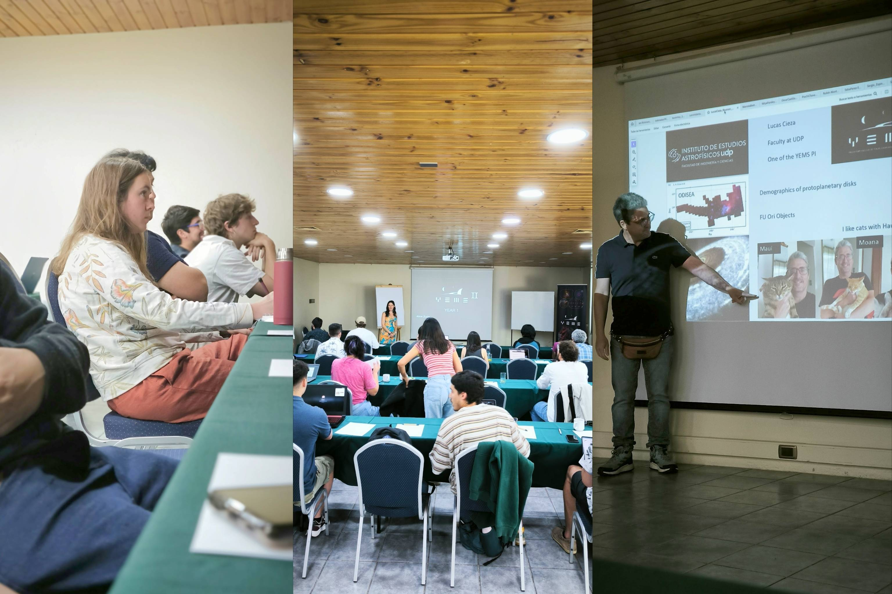

{kind=link}

In early December 2025, the Millennium Nucleus on Young Exoplanets and their Moons (YEMS) gathered for two days in San Esteban, Termas del Corazón, to combine scientific activities with spaces for community building.
The day began with a bus departure from Los Héroes to San Esteban and a session of personal introductions that allowed the team to get to know each other better, including students, postdocs, visiting students and academics from the various institutions that make up YEMS. A series of short talks then showcased the broad range of topics being addressed: from the search for exomoons and the study of eruptive stars, to the chemistry of protoplanetary discs, comet populations and the evolution of multiple stellar systems.
An important block was dedicated to the artificial intelligence and data science tools being developed within the Nucleus: neural networks for moment maps, hydrodynamic parameter inference with Deep Operator Networks, autoencoders to improve contrast in high dynamic range images, and new implementations of data processing algorithms. These contributions demonstrate how YEMS naturally integrates astrophysics, computer science and state-of-the-art instrumentation.
In the afternoon, working groups focused on common challenges: coordination of research teams, challenges in numerical simulations, AI development strategies for exoplanet detection and protoplanetary disc characterisation, and the planning of joint publications. The first day closed with a relaxed session at the thermal baths, which fostered informal conversations, new ideas and personal bonds within the team.
The second day was dedicated to updates on key YEMS projects: recent results from the ODISEA programme, progress in studying FUor objects with ALMA and JWST, as well as teaching and outreach initiatives, including new activities for schools and the Astrodiálogos programme. Progress on the PME project was also reviewed, and the team discussed how to enhance the Nucleus's national and international impact in the coming years.
The meeting ended with a general discussion session, where scientific and outreach priorities were defined, and concrete opportunities to strengthen collaborations between the different lines of work were identified. The team returned to Santiago with new ideas, clear tasks, and above all, a more connected and cohesive YEMS community.
We thank the participation and enthusiasm of everyone who made this meeting possible. Together, we continue building the future of research on young exoplanets and their moons from Chile!
{kind=link}
{kind=link}